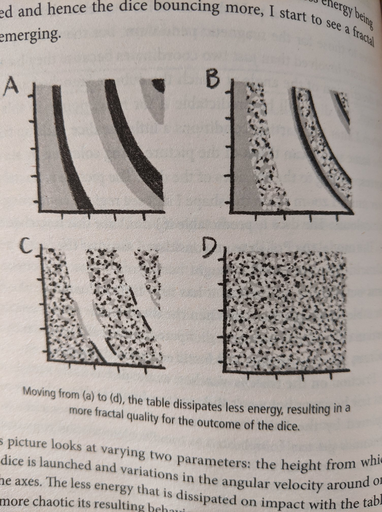
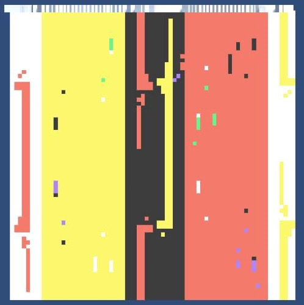
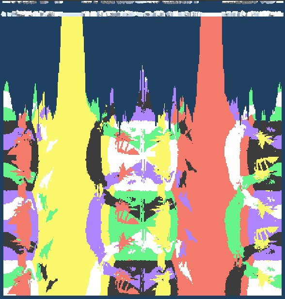

DICE
simulating dice rolls at 3am, because insomnia
Inspired by Marcus du Sautoy's dice diagrams in his book "What we cannot know" I thought I'd simulate some dice rolls in Unity, at 3am this morning... because insomnia. These are Marcus's diagrams

I started with simple 36 dice model

I then scaled this up to 360 realtime dice per line, as you can see that one is in the process of growing (with the blue space still to be filled) and is much more interesting. The colours represent different rolls as the dice is slowly rotated along 2 axes.
